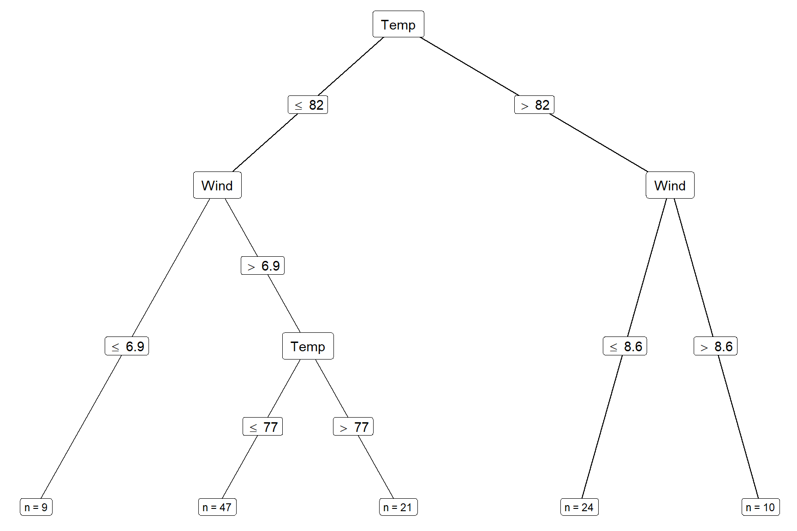
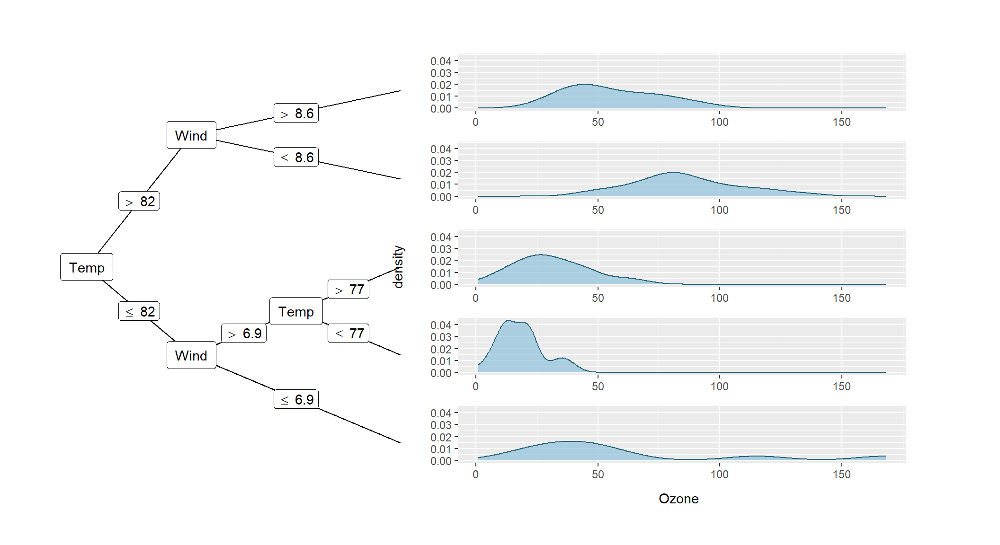
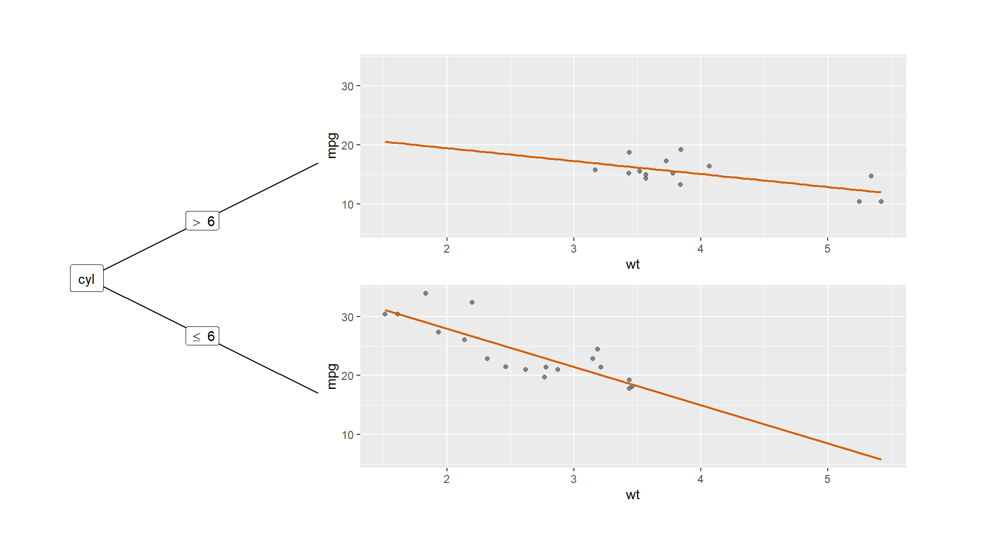
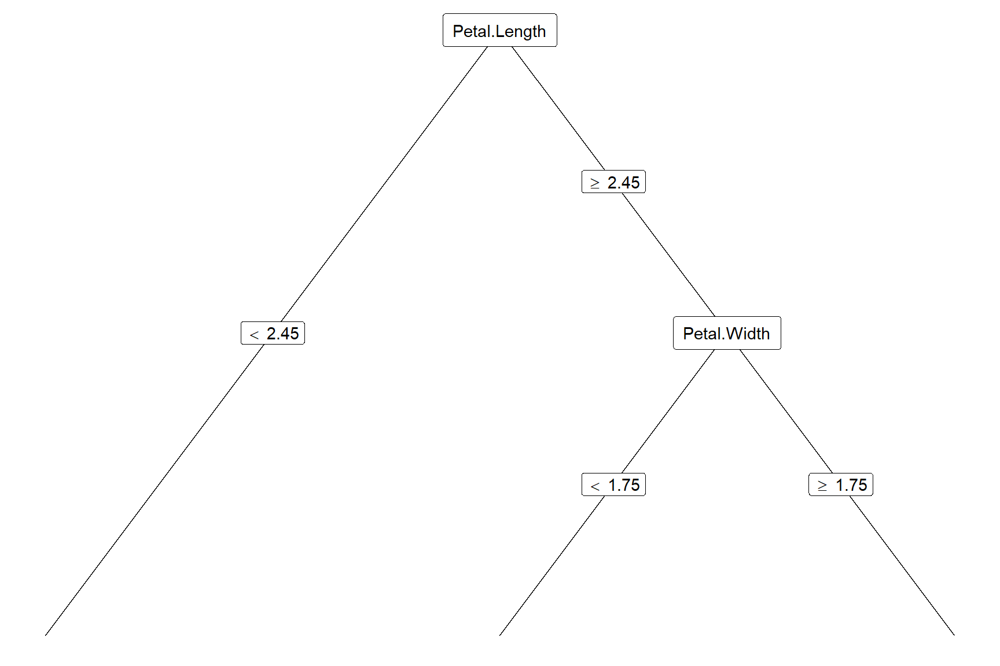
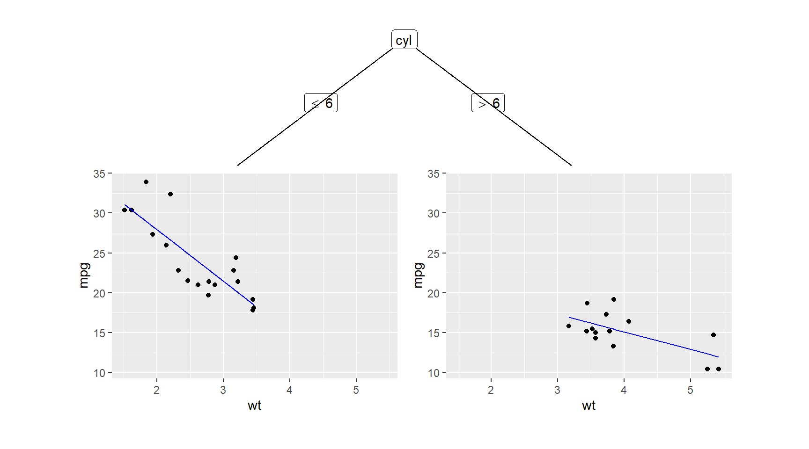
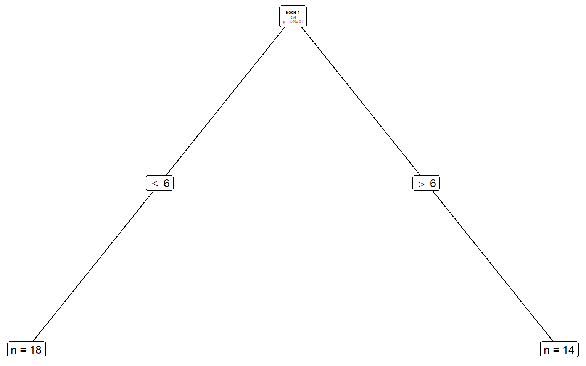
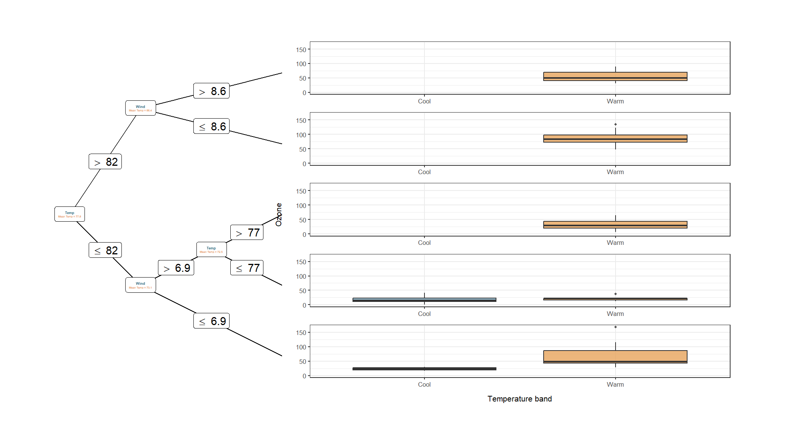

install.packages(c("ggparty", "partykit", "ggplot2", "rpart"))ggparty：用 ggplot2 可视化决策树
从 party 对象、树图图层到节点内小图的实用教程
ggparty 把 partykit 树对象转换为 ggplot 图，之后可以像普通 ggplot2 图一样逐层添加分支、标签和节点内图形。它负责可视化，不负责拟合或修剪树：树的结构、切分和预测仍由 partykit、rpart 等建模工具决定。CRAN 对包的介绍将其定位为 partykit 树对象 party 的 ggplot2 可视化扩展。
本页代码块由 Quarto / knitr 执行并生成图表。示例在 R 4.4.3、ggparty 1.0.0.1、partykit 1.3.1 和 ggplot2 4.0.3 下核对。
安装示例所需包；rpart 用于最后的转换示例：
1. 哪些对象可以画？
关键不是对象名字里有没有 “tree”，而是它是否属于 party 类体系。ggparty() 会检查输入对象是否继承自 party。构造函数源码
| 建树方式 | 对象类型 | 能否直接交给 ggparty() |
说明 |
|---|---|---|---|
partykit::ctree() |
通常为 constparty，继承自 party |
可以 | 条件推断分类树或回归树 |
partykit::mob()、lmtree()、glmtree() |
modelparty 一类的 party 对象 |
可以 | 模型树；还可以展示各节点模型的拟合或预测 |
rpart::rpart() |
rpart |
不可以直接传入 | 先用 partykit::as.party() 转换 |
partykit::cforest() |
森林集成对象 | 通常不可以直接传入 | 森林包含多棵树，不等于单个 party 树对象 |
partykit 的 ctree() 构造的是 party 基础设施上的常量拟合树；lmtree() 等模型树也使用相同的树对象体系。partykit 的 ctree 源码 · 模型树源码 · party 对象结构。cforest() 则保存多棵树及森林信息，见 partykit 的 cforest 源码。
2. 第一个例子：拟合并画一棵回归树
使用 R 自带的 airquality 数据，以臭氧浓度 Ozone 为结局。先完整案例删除缺失值，再用 ctree() 拟合一棵最多三层的树。运行代码会打印树对象，图中同时显示切分变量、分支条件和叶节点样本量。
airq <- na.omit(airquality)
air_tree <- partykit::ctree(
Ozone ~ Solar.R + Wind + Temp,
data = airq,
control = partykit::ctree_control(
minsplit = 24,
minbucket = 8,
maxdepth = 3
)
)
air_tree
#>
#> Model formula:
#> Ozone ~ Solar.R + Wind + Temp
#>
#> Fitted party:
#> [1] root
#> | [2] Temp <= 82
#> | | [3] Wind <= 6.9: 61.000 (n = 9, err = 19322.0)
#> | | [4] Wind > 6.9
#> | | | [5] Temp <= 77: 18.277 (n = 47, err = 3863.4)
#> | | | [6] Temp > 77: 31.143 (n = 21, err = 4620.6)
#> | [7] Temp > 82
#> | | [8] Wind <= 8.6: 85.667 (n = 24, err = 11145.3)
#> | | [9] Wind > 8.6: 55.500 (n = 10, err = 3090.5)
#>
#> Number of inner nodes: 4
#> Number of terminal nodes: 5ggparty(air_tree) +
geom_edge() +
geom_edge_label(fill = "white") +
geom_node_splitvar(ids = "inner", fill = "white") +
geom_node_label(
aes(label = paste0("n = ", nodesize)),
ids = "terminal",
size = 3,
fill = "white"
)
ctree() 拟合的臭氧回归树。边标签给出切分条件；叶节点标签给出该节点的样本量。
在本页核对的 ggparty 1.0.0.1 与 ggplot2 4.0.3 组合下，geom_edge_label() 会报告忽略旧参数 label.size 的兼容性警告，但边标签仍能正常绘制。后面的图块隐藏了这条已知警告，以免干扰图表阅读。
ggparty(air_tree) 返回一个可继续添加图层的 ggplot 对象。这个例子组合了四种信息：
geom_edge()绘制父节点到子节点的连线；geom_edge_label()在分支上标出切分条件。geom_node_splitvar()标出内部节点使用的切分变量。geom_node_label()自定义节点标签；nodesize是图数据中的节点样本量字段。
内部节点（发生切分的节点）和终末节点（叶节点）可以分别用 ids = "inner"、ids = "terminal" 选择。geom_node_info() 则可快速显示树对象保存的节点信息。
3. 调整方向、布局和标签
树较深或叶节点需要放置小图时，可以改成横向，并用 terminal_space 为叶节点区域留出空间。下面沿用同一棵树，在每个叶节点中绘制臭氧浓度的密度曲线：
ggparty(
air_tree,
horizontal = TRUE,
terminal_space = 0.62
) +
geom_edge() +
geom_edge_label(fill = "white") +
geom_node_splitvar(ids = "inner", fill = "white") +
geom_node_plot(
gglist = list(
geom_density(
aes(x = Ozone),
fill = "#8EC1DA",
colour = "#28627A",
alpha = 0.7
)
),
ids = "terminal",
scales = "fixed",
shared_axis_labels = TRUE
)
horizontal = TRUE将树横向排列；terminal_space控制为终末节点小图保留的区域比例。geom_node_plot()的gglist是加到节点小图上的ggplot2图层列表。官方示例也用它在airquality树的叶节点中绘制密度曲线。geom_node_plot()帮助与示例scales可设为"fixed"、"free"、"free_x"或"free_y"。固定范围适合比较组间位置和尺度；自由范围更适合查看各组形状，但不能直接比较坐标值。
layout 可接收含 id、x、y 三列的数据框，手工指定节点坐标；x 和 y 使用 0 到 1 的相对坐标。add_vars 可把树默认没有展示的节点信息加到图数据，再在标签图层中映射。函数形式的 add_vars 必须恰有 data 和 node 两个参数，并为每个节点返回一个值；若要把每个节点的数据传给 geom_node_plot()，名称需以 nodedata_ 开头，并返回按节点排列的列表。ggparty() 参数说明
4. 在叶节点里嵌入数据图
上面的密度图已经展示了 geom_node_plot() 的基本用法。节点内图不是树模型本身的一部分，而是把各叶节点对应的观测分开后，再逐节点绘图。可以把 ids 设为 "terminal"、"inner"、"all" 或具体节点编号；用 width、height 和 size 调整小图占用空间。
固定坐标范围适合比较各叶节点的分布位置和尺度；自由坐标范围适合查看形状，但图上不同面板的同一位置不代表相同数值。正式解释时，应在图注中说明所用尺度。
5. 模型树：展示每个叶节点的回归关系
ggparty 也可以画 partykit 的模型树。下面用 R 自带的 mtcars 数据，让 lmtree() 在叶节点内拟合 mpg ~ wt 线性回归，并尝试按 cyl 和 gear 寻找参数变化。为了让这个小型演示数据稳定地产生分裂，示例把 alpha 设为 0.99；这只是为了展示节点图，不是推荐的推断阈值，实际分析应按研究设计设定控制参数。get_predictions() 为每个终末节点的回归模型生成预测值，再由 geom_node_plot() 把点和拟合线画在节点内。
car_tree <- partykit::lmtree(
mpg ~ wt | cyl + gear,
data = mtcars,
minsize = 8,
maxdepth = 2,
alpha = 0.99
)
car_predictions <- get_predictions(
car_tree,
ids = "terminal",
newdata_fun = function(data) {
data.frame(
wt = seq(
min(data[["wt"]]),
max(data[["wt"]]),
length.out = 80
)
)
}
)
car_tree
#> Linear model tree
#>
#> Model formula:
#> mpg ~ wt | cyl + gear
#>
#> Fitted party:
#> [1] root
#> | [2] cyl <= 6: n = 18
#> | (Intercept) wt
#> | 40.85339 -6.47022
#> | [3] cyl > 6: n = 14
#> | (Intercept) wt
#> | 23.868029 -2.192438
#>
#> Number of inner nodes: 1
#> Number of terminal nodes: 2
#> Number of parameters per node: 2
#> Objective function (residual sum of squares): 178.6246ggparty(car_tree, horizontal = TRUE, terminal_space = 0.72) +
geom_edge() +
geom_edge_label(fill = "white") +
geom_node_splitvar(ids = "inner", fill = "white") +
geom_node_plot(
ids = "terminal",
scales = "fixed",
gglist = list(
aes(x = wt, y = mpg),
geom_point(alpha = 0.65, colour = "#4D4D4D"),
geom_line(
data = car_predictions,
aes(x = wt, y = prediction),
colour = "#D55E00",
linewidth = 0.8
)
)
)
mpg 与 wt 观测，以及对应节点线性模型的预测线。
get_predictions() 的 ids 必须与 geom_node_plot() 的 ids 相同；否则预测行无法对应到要绘制的节点。该函数针对每个叶节点使用其保存的模型对象进行预测。模型树节点预测示例
6. 可视化 rpart 树
rpart 拟合结果本身不是 party 对象。先用 partykit::as.party() 转换，再添加同一套图层：
species_rpart <- rpart::rpart(
Species ~ ., data = iris,
control = rpart::rpart.control(maxdepth = 3, cp = 0.01)
)
species_party <- partykit::as.party(species_rpart)
species_party
#>
#> Model formula:
#> Species ~ Sepal.Length + Sepal.Width + Petal.Length + Petal.Width
#>
#> Fitted party:
#> [1] root
#> | [2] Petal.Length < 2.45: setosa (n = 50, err = 0.0%)
#> | [3] Petal.Length >= 2.45
#> | | [4] Petal.Width < 1.75: versicolor (n = 54, err = 9.3%)
#> | | [5] Petal.Width >= 1.75: virginica (n = 46, err = 2.2%)
#>
#> Number of inner nodes: 2
#> Number of terminal nodes: 3ggparty(species_party) +
geom_edge() +
geom_edge_label(fill = "white") +
geom_node_splitvar(ids = "inner", fill = "white") +
geom_node_info(ids = "terminal", fill = "white")
rpart 拟合结果转换为 party 对象后，用 ggparty 绘制。
转换及支持范围可参考 partykit::as.party() 文档与源码。对其他树模型，也应先检查其对象类别和转换方法；不要仅因对象能打印成树，就假定 ggparty() 可以直接处理。
7. 常见问题与实践建议
| 现象 | 常见原因 | 处理方式 |
|---|---|---|
报错说对象不属于 party 类 |
输入是 rpart 等其他对象 |
查找对应的 partykit::as.party() 转换方法；不能转换时先提取单棵兼容树 |
| 标签或节点图里出现意外的样本量 | 建树时的缺失值处理改变了实际参与拟合的数据 | 明确建树前如何处理缺失值；报告树所用样本，不要把原始数据总行数当作树样本数 |
| 节点里的图显得很挤 | 树太深，或叶节点可用空间太少 | 用 horizontal = TRUE，增大 terminal_space，缩小节点图，或限制树深 |
| 各叶节点的分布看起来不能比较 | 使用了自由坐标轴 | 若重点是比较位置或尺度，优先试 scales = "fixed"；若重点是看各组形状，可考虑自由坐标并在图注说明 |
调用 get_predictions() 后节点图不显示曲线 |
ids 不一致，或节点模型不支持相应的 predict() 调用 |
对齐两个函数的 ids，并检查模型对象、newdata_fun 返回的列及类型 |
| 误把节点内图当成模型检验结果 | 图展示的是节点观测分布或拟合值，本身不提供新的推断 | 将切分选择、模型拟合、验证和不确定性分析与可视化分开说明 |
较稳妥的工作顺序是：先确认输入对象继承自 party；再画树结构并核对切分路径；然后逐层添加节点标签；最后加节点内图，检查训练样本、坐标尺度和图例是否符合比较目标。
8. 主要函数详解
ggparty 的工作流程分成两步：ggparty() 把树对象整理成可供 ggplot2 使用的数据；随后用 geom_*() 图层决定显示哪些边、标签和节点图。以下函数是制作自定义树图时最常用的一组。
8.1 ggparty()：创建树图底图
ggparty(
party,
horizontal = FALSE,
terminal_space,
layout = NULL,
add_vars = NULL
)函数接收 partykit 的 party 对象，返回可继续用 + 添加图层的 ggplot 对象。它不会重新拟合树。主要参数如下：
| 参数 | 用途 | 什么时候调整 |
|---|---|---|
party |
要画的树，须继承自 party |
rpart 对象先尝试用 partykit::as.party() 转换 |
horizontal |
TRUE 时横向排树 |
树较深，或要在叶节点放横向小图时 |
terminal_space |
给末端节点图预留的绘图区比例；默认值随树深调整 | 小图被挤压时增大；仅画树结构时通常保留默认值 |
layout |
含 id、x、y 的数据框，覆盖指定节点坐标；坐标范围为 0–1 |
需要手工避开标签重叠或安排特殊版式时 |
add_vars |
把树节点中的额外信息加入 ggplot 数据 | 需要在标签中显示 ggparty 默认未提供的字段时 |
add_vars 可以用字符串路径读取节点对象中的字段，例如 "$node$info$p.value"。也可以给函数，函数必须恰有 data 和 node 两个参数，并对每个节点返回一个值。若要让节点内小图访问逐观测数据，列表项名称需以 nodedata_ 开头，函数返回值须是与节点样本量对应的列表。参数定义与示例
8.2 autoplot()：快速查看默认图
autoplot() 是快速检查树对象的入口。它按对象类别调用相应方法；适合先看默认布局，再按需要换成 ggparty() + geom_*() 自定义图层。
| 对象方法 | 主要参数 | 默认展示 |
|---|---|---|
autoplot.party()、autoplot.constparty() |
object, ... |
树边、切分条件、内部节点变量和末端节点信息；constparty 还可显示末端响应分布 |
autoplot.modelparty() |
object, plot_var = NULL, ... |
各模型节点中，响应变量与协变量 plot_var 的关系；默认取树数据的第二列 |
autoplot.lmtree() |
object, plot_var = NULL, show_fit = TRUE, ... |
观测散点及节点拟合值；show_fit = FALSE 可隐藏拟合线 |
以下代码会直接生成一张模型树默认图。由于 autoplot() 返回 ggplot 对象，也能继续加 labs()、theme_*() 等图层：
autoplot(car_tree, plot_var = "wt", show_fit = TRUE) +
labs(x = "Weight (1000 lb)", y = "Fuel economy (mpg)") +
theme_void()
autoplot.lmtree() 以 wt 为横轴显示节点观测及节点模型拟合值。
如需控制内部/末端节点文字、边标签、配色或小图布局，应改用显式图层；这样能更清楚地知道每一层在表达什么。
8.3 geom_edge() 与 geom_edge_label()：分支和切分条件
geom_edge() 画父节点到子节点的连线，是树图的骨架。geom_edge_label() 沿分支显示切分条件，默认使用树中对应的 breaks_label。它们都可用 ids 只选部分分支；这里的 ID 是子节点的 ID。
| 函数 | 常用参数 | 说明 |
|---|---|---|
geom_edge(mapping = NULL, ids = NULL, nudge_x = 0, nudge_y = 0, ...) |
mapping、ids、nudge_x、nudge_y |
默认映射父子节点坐标；... 传给 ggplot2::geom_segment()，例如 colour、linewidth、linetype |
geom_edge_label(mapping = NULL, ids = NULL, shift = 0.5, splitlevels = seq_len(100), max_length = NULL, parse = TRUE, ...) |
shift、splitlevels、max_length、parse |
shift 在 0–1 之间控制标签沿边的位置；因子切分很多时可筛选 splitlevels 或截短 max_length；... 传给 ggplot2::geom_label() |
当分支标签彼此重叠时，先试着调 shift 或 nudge_x / nudge_y，再考虑隐藏不重要的边标签。parse 默认解析比较符号；若标签是自定义普通文本，可设为 FALSE。完整参数见 geom_edge() 和 geom_edge_label()。
8.4 geom_node_label() 及两个快捷图层：节点文字
geom_node_label() 在节点坐标上画文字框，默认继承树图数据中的 x、y。用 aes(label = ...) 映射要显示的内容，再通过 ids 选择节点："inner" 是发生切分的内部节点，"terminal" 是叶节点，"all" 是全部节点，也可传数值型节点 ID。
geom_node_label(
aes(label = paste0("n = ", nodesize)),
ids = "terminal",
fill = "white"
)geom_node_splitvar()是快捷写法：默认在内部节点显示切分变量splitvar。geom_node_info()是快捷写法：默认在末端节点显示模型或节点信息info。nudge_x、nudge_y可微调文字框位置；label.padding、label.r、label.size、label.col、label.fill可调整留白、圆角、边框和底色。line_list可为多行标签分别指定aes(label = ...)；此时不要再在主mapping中映射label。配套的line_gpar可逐行控制文字大小、颜色或字形，两个列表的长度必须一致。
内部节点的 p 值示例：在 ggparty() 中用 add_vars 把 node$info$p.value 加到绘图数据，再用多行标签显示节点编号、切分变量和 p 值。此例复用前面拟合的 car_tree：
ggparty(
car_tree,
add_vars = list(p.value = "$node$info$p.value")
) +
geom_edge() +
geom_edge_label(fill = "white") +
geom_node_label(
line_list = list(
aes(label = paste("Node", id)),
aes(label = splitvar),
aes(label = paste("p =", formatC(p.value, format = "e", digits = 2)))
),
line_gpar = list(
list(size = 4, col = "black", fontface = "bold"),
list(size = 4, col = "#28627A"),
list(size = 3.5, col = "#D55E00")
),
ids = "inner",
label.fill = "white"
) +
geom_node_label(
aes(label = paste0("n = ", nodesize)),
ids = "terminal",
fill = "white"
)
add_vars 提取模型树节点的 p 值，并用 line_list 分行标注内部节点。
8.5 自定义变量与节点可视化
ggparty() 的 add_vars 可以把自定义摘要值或节点内的逐观测变量加入绘图数据，供节点标签和 geom_node_plot() 使用：
- 普通名称（如
mean_temp）的函数对每个节点返回一个值，适合在节点标签中显示均值、比例或其他摘要。 - 名称以
nodedata_开头时，函数返回一个单元素列表，列表中放该节点每条观测对应的向量。geom_node_plot()中使用去掉前缀后的列名（本例为Temp_band）。 - 回调函数必须恰有
data和node两个参数。node是当前节点的party对象；unclass(node)[["data"]]取该节点观测。自定义变量所需的原始列必须保留在树对象的数据中。
下面从树对象保留的 Temp 派生“冷/暖”分组：不把 Temp_band 加入树模型，因此它只用于显示，不会改变分裂结果。内部节点显示平均温度，叶节点的小图按温度分组比较 Ozone：
air_tree_custom <- suppressWarnings(
ggparty(
air_tree,
horizontal = TRUE,
terminal_space = 0.68,
add_vars = list(
mean_temp = function(data, node) {
node_data <- unclass(node)[["data"]]
mean(node_data[["Temp"]], na.rm = TRUE)
},
nodedata_Temp_band = function(data, node) {
node_data <- unclass(node)[["data"]]
list(
factor(
ifelse(node_data[["Temp"]] >= 75, "Warm", "Cool"),
levels = c("Cool", "Warm")
)
)
}
)
)
)在 ggparty 1.0.0.1 中，nodedata_ 字段会由内部逻辑自动映射；add_vars 再注册同名列时会产生重复映射警告，但图仍可正常生成。因此示例只在创建 ggparty 对象时用 suppressWarnings() 隐藏这一已知提示，不影响后续绘图或其他警告。可参阅ggparty() 源码。
air_tree_custom +
geom_edge() +
geom_edge_label(fill = "white") +
geom_node_label(
line_list = list(
aes(label = splitvar),
aes(label = paste0("Mean Temp = ", round(mean_temp, 1)))
),
line_gpar = list(
list(size = 3.5, col = "#28627A", fontface = "bold"),
list(size = 2.8, col = "#D55E00")
),
ids = "inner",
label.fill = "white"
) +
geom_node_plot(
ids = "terminal",
scales = "fixed",
shared_axis_labels = TRUE,
gglist = list(
aes(x = Temp_band, y = Ozone, fill = Temp_band),
geom_boxplot(alpha = 0.8, outlier.size = 0.7),
scale_fill_manual(values = c(Cool = "#8EC1DA", Warm = "#E7A45B")),
labs(x = "Temperature band", y = "Ozone"),
theme_bw(base_size = 8),
theme(legend.position = "none")
)
)
如果图中没有出现目标变量，可检查树公式是否把原始列（本例的 Temp 和 Ozone）保留在节点数据里。节点摘要用于文字标签；nodedata_ 则把节点内的行级数据交给小图，两者的返回结构不同。
8.6 geom_node_plot()：把 ggplot 小图放进树节点
geom_node_plot() 会在选定的节点中分别建立小型 ggplot。gglist 是 ggplot 图层列表，可以放入 aes()、几何图层、比例尺或主题；图层可映射节点观测数据，也可映射模型树提供的 fitted_values 和 residuals。
| 参数 | 用途 | 选择建议 |
|---|---|---|
ids |
指定 "terminal"、"inner"、"all" 或数值节点 ID |
叶节点分组图最常用 "terminal" |
gglist、plot_call |
定义每个节点内的小图及创建小图的函数 | 常见场景使用 gglist 添加 ggplot 图层 |
scales |
坐标范围，支持 "fixed"、"free"、"free_x"、"free_y" |
要比较数值尺度时用固定范围；只看形状时可考虑自由范围 |
width、height、size |
调整节点图绘图区的宽、高和整体大小 | 图太挤时先配合 terminal_space 调整 |
shared_axis_labels |
共享末端节点小图的坐标轴标题 | 多个叶节点使用同一套坐标时开启 |
shared_legend、legend_separator |
共享图例；可在树与图例之间加分隔线 | 同一映射跨节点比较时保留共享图例 |
predict、predict_gpar |
为指定变量绘制模型预测线及其 geom_line() 参数 |
模型树且支持相应 predict() 方法时使用 |
节点图属于可视化图层，不会重新训练各节点模型。坐标是否固定会直接影响比较结论：不同节点采用自由坐标轴时，图形占满小面板并不表示原始量级相近。
8.7 get_predictions()：为节点模型准备预测曲线
get_predictions(party_object, ids, newdata_fun, predict_arg = NULL)函数返回供节点图使用的数据框，其中含预测变量、节点 id 和预测结果 prediction。ids 必须与承载这组数据的 geom_node_plot(ids = ...) 完全一致，否则预测值无法与节点对应。newdata_fun 接收数据并返回要交给 predict() 的新数据；predict_arg 是额外传给模型 predict() 的参数列表。
前面模型树示例用全树 wt 范围建立一套共同横坐标，再把每个终末节点的拟合线叠加到节点观测上。这样各节点可以直接比较同一重量范围内的拟合关系。官方手册对 newdata_fun 的参数描述是节点数据；CRAN 1.0.0.1 源码的实际调用传入 party_object$data。若需构造每个节点不同的预测范围，建议先核对正在使用的版本实现。函数文档 · 1.0.0.1 源码
9. 函数速查与参考资料
| 函数 | 用途 |
|---|---|
ggparty() |
建立树图的 ggplot 基础对象；控制方向、布局、叶节点空间和附加节点变量 |
geom_edge() |
绘制连接节点的分支 |
geom_edge_label() |
在分支上标注切分条件 |
geom_node_label() |
自定义节点标签 |
geom_node_splitvar() |
便捷显示切分变量 |
geom_node_info() |
便捷显示节点信息 |
geom_node_plot() |
在指定树节点嵌入 ggplot 图 |
get_predictions() |
为模型树节点生成预测数据，供节点内图形使用 |
autoplot.party() / autoplot.constparty() / autoplot.modelparty() / autoplot.lmtree() |
按树对象类别快速绘图；模型树方法可指定协变量并控制拟合线 |
进一步阅读：
本页按 CRAN 页面核对至 2026-09-28：ggparty 版本为 1.0.0.1，发布于 2025-07-10。CRAN 版本记录 本页的图表由对应的 R 代码块生成；复制单个代码块时，请先运行其前面的数据准备代码块。